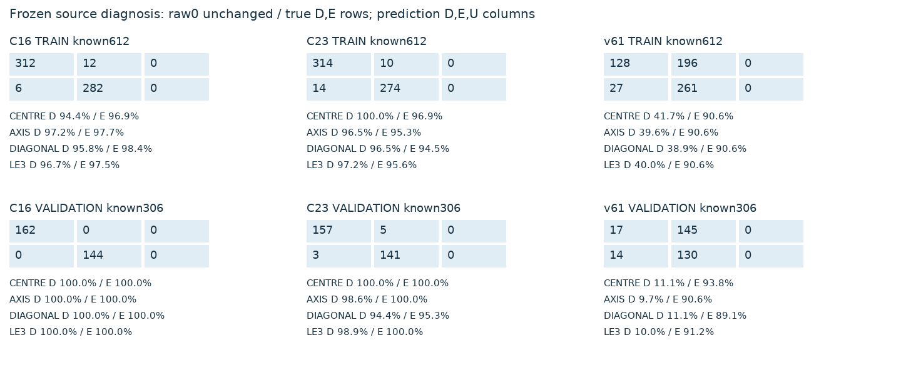
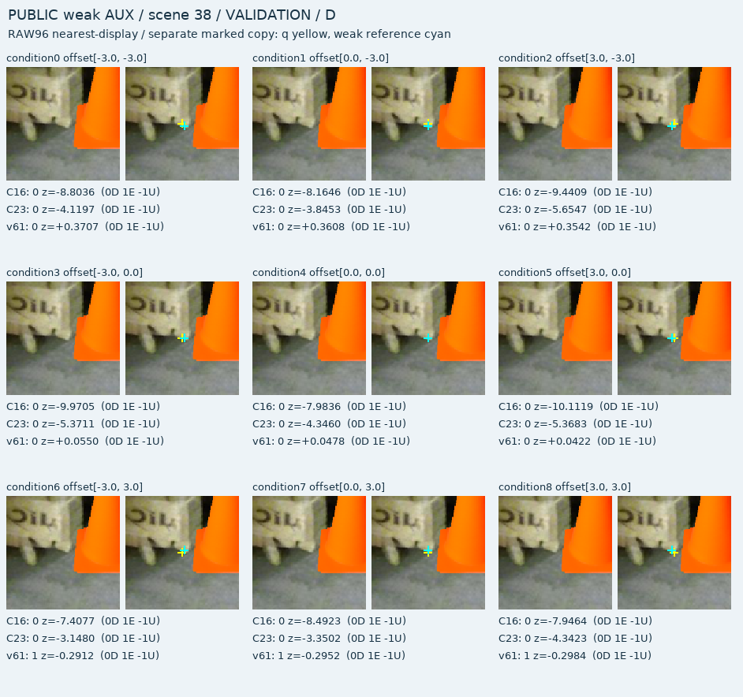
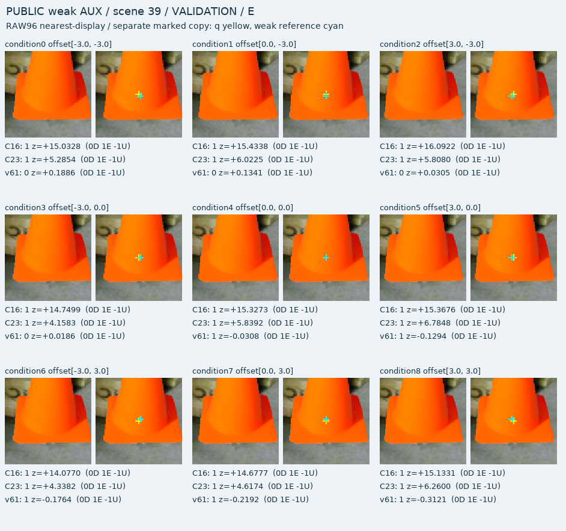
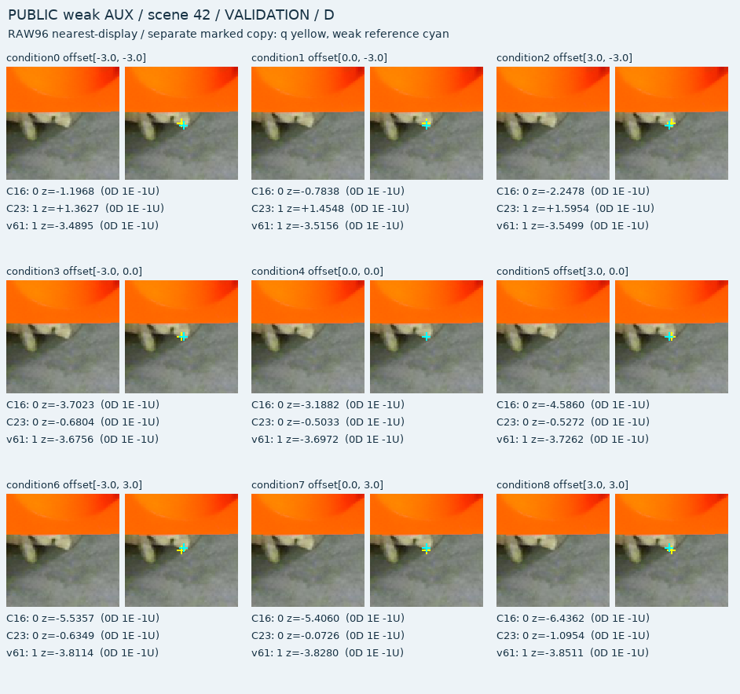
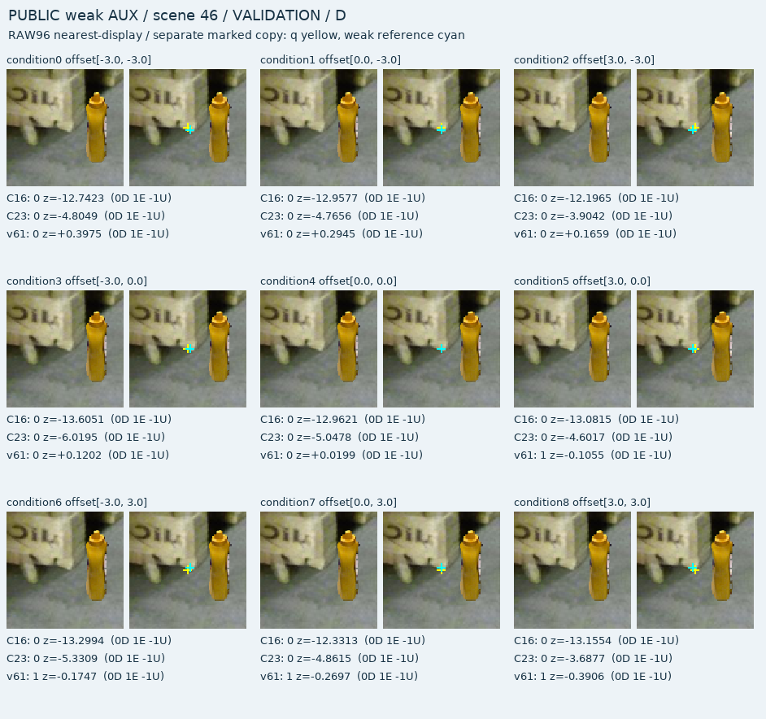

학습·체크포인트·임계값 변경 없이 저장 예측만 평가했습니다. 모든 query는 source emulation이며 weak conditional AUX입니다. native/human gold나 실제 initializer 정확도 평가가 아닙니다. 전체 목표와 source gate는 그대로이며, 쉬운 부분집합으로 모델을 채택하지 않습니다.
총918행: TRAIN612 / 내부 VALIDATION306. 원본6프레임·102합성 장면을9번 query 이동한 반복이며 독립918이미지가 아닙니다. VAL은2cue/2프레임이고 case23 take는 개발 노출이 있습니다. 중심0px, 축3px, 대각√18≈4.243px입니다. ≤3px는 중심과 축의5조건을 포함합니다. 원 weakcue uncertainty를 줄이지 않았습니다. teacher U와 입력 불가는 별도이며 recall 분모에는 예측 U를 포함합니다.
| fold | 모델 | 조건 | known | CM D/E×D/E/U | D P | D R | E P | E R | U |
|---|---|---|---|---|---|---|---|---|---|
| TRAIN | C16 | ALL | 612 | [[312 12 0] [ 6 282 0]] | 98.1% | 96.3% | 95.9% | 97.9% | 0 |
| TRAIN | C16 | CENTRE_0PX | 68 | [[34 2 0] [ 1 31 0]] | 97.1% | 94.4% | 93.9% | 96.9% | 0 |
| TRAIN | C16 | AXIS_3PX | 272 | [[140 4 0] [ 3 125 0]] | 97.9% | 97.2% | 96.9% | 97.7% | 0 |
| TRAIN | C16 | DIAGONAL_SQRT18PX | 272 | [[138 6 0] [ 2 126 0]] | 98.6% | 95.8% | 95.5% | 98.4% | 0 |
| TRAIN | C16 | LE3_INCLUDES_CENTRE_5CONDITIONS | 340 | [[174 6 0] [ 4 156 0]] | 97.8% | 96.7% | 96.3% | 97.5% | 0 |
| TRAIN | C23 | ALL | 612 | [[314 10 0] [ 14 274 0]] | 95.7% | 96.9% | 96.5% | 95.1% | 0 |
| TRAIN | C23 | CENTRE_0PX | 68 | [[36 0 0] [ 1 31 0]] | 97.3% | 100.0% | 100.0% | 96.9% | 0 |
| TRAIN | C23 | AXIS_3PX | 272 | [[139 5 0] [ 6 122 0]] | 95.9% | 96.5% | 96.1% | 95.3% | 0 |
| TRAIN | C23 | DIAGONAL_SQRT18PX | 272 | [[139 5 0] [ 7 121 0]] | 95.2% | 96.5% | 96.0% | 94.5% | 0 |
| TRAIN | C23 | LE3_INCLUDES_CENTRE_5CONDITIONS | 340 | [[175 5 0] [ 7 153 0]] | 96.2% | 97.2% | 96.8% | 95.6% | 0 |
| TRAIN | v61 | ALL | 612 | [[128 196 0] [ 27 261 0]] | 82.6% | 39.5% | 57.1% | 90.6% | 0 |
| TRAIN | v61 | CENTRE_0PX | 68 | [[15 21 0] [ 3 29 0]] | 83.3% | 41.7% | 58.0% | 90.6% | 0 |
| TRAIN | v61 | AXIS_3PX | 272 | [[ 57 87 0] [ 12 116 0]] | 82.6% | 39.6% | 57.1% | 90.6% | 0 |
| TRAIN | v61 | DIAGONAL_SQRT18PX | 272 | [[ 56 88 0] [ 12 116 0]] | 82.4% | 38.9% | 56.9% | 90.6% | 0 |
| TRAIN | v61 | LE3_INCLUDES_CENTRE_5CONDITIONS | 340 | [[ 72 108 0] [ 15 145 0]] | 82.8% | 40.0% | 57.3% | 90.6% | 0 |
| VALIDATION | C16 | ALL | 306 | [[162 0 0] [ 0 144 0]] | 100.0% | 100.0% | 100.0% | 100.0% | 0 |
| VALIDATION | C16 | CENTRE_0PX | 34 | [[18 0 0] [ 0 16 0]] | 100.0% | 100.0% | 100.0% | 100.0% | 0 |
| VALIDATION | C16 | AXIS_3PX | 136 | [[72 0 0] [ 0 64 0]] | 100.0% | 100.0% | 100.0% | 100.0% | 0 |
| VALIDATION | C16 | DIAGONAL_SQRT18PX | 136 | [[72 0 0] [ 0 64 0]] | 100.0% | 100.0% | 100.0% | 100.0% | 0 |
| VALIDATION | C16 | LE3_INCLUDES_CENTRE_5CONDITIONS | 170 | [[90 0 0] [ 0 80 0]] | 100.0% | 100.0% | 100.0% | 100.0% | 0 |
| VALIDATION | C23 | ALL | 306 | [[157 5 0] [ 3 141 0]] | 98.1% | 96.9% | 96.6% | 97.9% | 0 |
| VALIDATION | C23 | CENTRE_0PX | 34 | [[18 0 0] [ 0 16 0]] | 100.0% | 100.0% | 100.0% | 100.0% | 0 |
| VALIDATION | C23 | AXIS_3PX | 136 | [[71 1 0] [ 0 64 0]] | 100.0% | 98.6% | 98.5% | 100.0% | 0 |
| VALIDATION | C23 | DIAGONAL_SQRT18PX | 136 | [[68 4 0] [ 3 61 0]] | 95.8% | 94.4% | 93.8% | 95.3% | 0 |
| VALIDATION | C23 | LE3_INCLUDES_CENTRE_5CONDITIONS | 170 | [[89 1 0] [ 0 80 0]] | 100.0% | 98.9% | 98.8% | 100.0% | 0 |
| VALIDATION | v61 | ALL | 306 | [[ 17 145 0] [ 14 130 0]] | 54.8% | 10.5% | 47.3% | 90.3% | 0 |
| VALIDATION | v61 | CENTRE_0PX | 34 | [[ 2 16 0] [ 1 15 0]] | 66.7% | 11.1% | 48.4% | 93.8% | 0 |
| VALIDATION | v61 | AXIS_3PX | 136 | [[ 7 65 0] [ 6 58 0]] | 53.8% | 9.7% | 47.2% | 90.6% | 0 |
| VALIDATION | v61 | DIAGONAL_SQRT18PX | 136 | [[ 8 64 0] [ 7 57 0]] | 53.3% | 11.1% | 47.1% | 89.1% | 0 |
| VALIDATION | v61 | LE3_INCLUDES_CENTRE_5CONDITIONS | 170 | [[ 9 81 0] [ 7 73 0]] | 56.2% | 10.0% | 47.4% | 91.2% | 0 |





raw crop은 수정하지 않았고 q/r 마크는 별도 사본입니다. 시각화는 VAL에서 중심 정답 후 축 방향 실패가 생긴 첫 최대4장면이며, 없을 때만 C23의 첫 D/E 안정 장면을 사용합니다. 이는 실패 원인의 단독 인과 증명이 아닙니다. native zero-error 실패 등 기존 전체 한계는 이 진단으로 없어지지 않습니다.
전체 cue/조건/가용성·기존 wide 비교 · 918행 · 동일q8 D/E/D triplets · 장면별 중심→축 변화 · 그림 선택 규칙